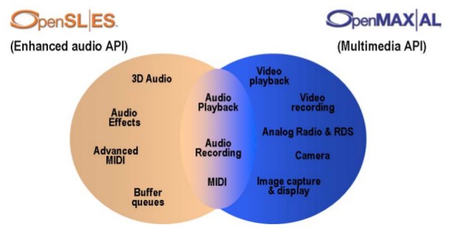

OpenMAX and OpenSL are open standards from the Khronos group that are designed for low capability devices. Vendors of cards are expected to produce implementations. There is little by way of general Linux implementations, but Broadcom have implemented one of the specifications (OpenMAX IL), and their chip is used in the Raspberry Pi. Other specifications (OpenMAX AL and OpenSL ES) are expected to be implemented in Android devices, accessible by the Native Development Kit (NDK).
"The Khronos Group is a not for profit industry consortium creating open standards for the authoring and acceleration of parallel computing, graphics, dynamic media, computer vision and sensor processing on a wide variety of platforms and devices". For this book, the relevant standards that they produce are OpenSL (not to be confused with OpenGL - a graphics specification) and OpenMAX.
OpenSL and OpenMAX are intended for slightly different uses, but have an overlap
of functionality. From the OpenSL ES and OpenMAX Al specifications this is shown by the
following figure:

OpenSL is intended for complex audio systems while OpenMAX is intended for
general multi-media systems. Either can be used separately, or if needed
both can be used - in the overlapping area the functionality is the same
(even though the function calls are distinct).
Each of these is further divided into profiles. For OpenSL the profiles are
with optional functionality in
A full chart of features in each profile is given in the specification.
OpenMAX has profiles
with optional functionality in
A full chart of features in each profile is given in the specification.
Just to complicate things a little, OpenSL only has one specification, OpenSL ES (no, I don't know what ES stands for). On the other hand, OpenMAX has two specified layers, OpenMAX IL (interface layer) and OpenMAX AL (application layer). The APIs for OpenSL ES and OpenMAX AL mirror each other in the common area. The API for OpenMAX IL is at a considerably lower level than the API for OpenMAX AL, and is discussed in a later section.
The specifications give some examples on how the different profiles might be mixed:
- Example 1: an audio-only application will have no need for video and image functionality and therefore would likely pick one of the OpenSL ES profiles, depending on the use cases of interest.
- Example 2: a media playback and recording application would use the OpenMAX AL 1.0 Media Player/Recorder profile.
- Example 3: An advanced multimedia/game application that needs audio/video/image playback and recording as well as advanced audio features like 3D audio and effects would use both the Media Player/Recorder profile of OpenMAX AL 1.0 and the Game profile of OpenSL ES 1.0.
It is expected that OpenMAX and OpenSL will find their major uses in situations where the CPU and memory are limited, but where there is the possibility of hardware acceleration of video and audio by e.g. a GPU. Consequently, the situation for general Linux systems is poor. Bellagio has an implementation of OpenMAX IL. LIM has an implementation of both OpenMAX AL and IL.
I have not been able to find any OpenSL ES implementations for general Linux.
The Raspberry Pi supports OpenMAX IL from the Broadcom card included. If you download the firmware master from the Raspberry Pi download site, a number of examples are included such as firmware-master/documentation/ilcomponents/audio_mixer.html. These are not "pure" OpenMAX IL: they make use of a Broadcom convenience package and also use some vendor extension APIs beyond the OpenMAX IL standard.
You write Android apps in Java. But like most Java systems, code written in C or C++ can be included as "native" methods. The native code is linked by a framework called JNI (Java Native Interface). For the Android, Google have standardised a number of libraries in the NDK (Native Development Kit). This includes both OpenSL ES and OpenMAX AL. Informaton about these is included in the Android NDK .
Documents in the NDK such as android-ndk-r8d/docs/opensles/index.html give good overviews of using these, although using the JNI to build applications is not for the faint of heart. In addition, the documentation inlcudes comments like "In particular, use of OpenSL ES does not guarantee a lower audio latency, higher scheduling priority, etc. than what the platform generally provides". From Android 4.2 on, lower latency will be possible using OpenSL ES. See the Performance section in opensles/index.html
See android-ndk-r8d/samples/native-audio for an example using Java + JNI + OpenSL ES.
These examples are taken from the appendices of the OpenSL ES specification.
The programming model for OpenSL ES is that of interfaces and objects. The programming language is C, so one of the common mechanisms for writing O/O style code in C is used (see e.g. Object-Oriented Programming In C ). Interfaces are represented by structures containing function pointers for methods. An object which implements the interface is of the interface type, with the methods as particular functions. Calling a method involves calling the appropriate function in the structure. The "this" object is always passed in as the first parameter of the function as in
(*object) -> method(object, ...)
Every object has to be "realised" before it can be used.
There does not seem to be any inheritance model, but then that isn't necessary here.
Note that every function returns a value that can be tested for sucess or fail.
Objects that are created are passed as address parameters for filling.
The application is responsible for freeing any memory allocated during this
by calling Destroy() on the object.
An OpenSL (or OpenMAX AL) application is started by creating an "engine" using
slCreateEngine(). This is the only global function in the library.
From then on, objects are obtained from the engine or other objects by a call
to GetInterface() or CreateXYZ on the engine or object.
For example,
(*engine) -> CreateOutputMix(engine, &output_mix...);
(*output_mix) -> GetInterface(output_mix, SL_IID_VOLUME, &volume, ...);
The model for playing audio is not very complex, just verbose. It consists of
SLresult res;
SLObjectItf sl;
SLEngineOption EngineOption[] = {
(SLuint32) SL_ENGINEOPTION_THREADSAFE,
(SLuint32) SL_BOOLEAN_TRUE};
res = slCreateEngine( &sl, 1, EngineOption, 0, NULL, NULL);
CheckErr(res);
/* Realizing the SL Engine in synchronous mode. */
res = (*sl)->Realize(sl, SL_BOOLEAN_FALSE); CheckErr(res);
/* Local storage for Audio data */
SLint16 pcmData[AUDIO_DATA_STORAGE_SIZE];
/* put something nito pcmData ... not done here */
/* Setup the data source structure for the buffer queue */
bufferQueue.locatorType = SL_DATALOCATOR_BUFFERQUEUE;
bufferQueue.numBuffers = 4; /* Four buffers in our buffer queue */
/* Setup the format of the content in the buffer queue */
pcm.formatType = SL_DATAFORMAT_PCM;
pcm.numChannels = 2;
pcm.samplesPerSec = SL_SAMPLINGRATE_44_1;
pcm.bitsPerSample = SL_PCMSAMPLEFORMAT_FIXED_16;
pcm.containerSize = 16;
pcm.channelMask = SL_SPEAKER_FRONT_LEFT | SL_SPEAKER_FRONT_RIGHT;
pcm.endianness = SL_BYTEORDER_LITTLEENDIAN;
audioSource.pFormat = (void *)&pcm;
audioSource.pLocator = (void *)&bufferQueue;
for (i=0;i<MAX_NUMBER_INTERFACES;i++)
{
required[i] = SL_BOOLEAN_FALSE;
iidArray[i] = SL_IID_NULL;
}
// Create Output Mix object to be used by player
res = (*EngineItf)->CreateOutputMix(EngineItf, &OutputMix, 1,
iidArray, required); CheckErr(res);
// Realizing the Output Mix object in synchronous mode.
res = (*OutputMix)->Realize(OutputMix, SL_BOOLEAN_FALSE);
CheckErr(res);
The callback in this case uses a data structure to hold all of the data and pointers to the start and current position of the data. This is for this application, and is not a part of OpenSL
/* Structure for passing information to callback function */
typedef struct CallbackCntxt_ {
SLPlayItf playItf;
SLint16* pDataBase;
// Base adress of local audio data storage
SLint16* pData;
// Current adress of local audio data storage
SLuint32 size;
} CallbackCntxt;
Then we can set up the output sink and callback data
/* Setup the data sink structure */
locator_outputmix.locatorType = SL_DATALOCATOR_OUTPUTMIX;
locator_outputmix.outputMix = OutputMix;
audioSink.pLocator = (void *)&locator_outputmix;
audioSink.pFormat = NULL;
/* Initialize the context for Buffer queue callbacks */
cntxt.pDataBase = (void*)&pcmData;
cntxt.pData = cntxt.pDataBase;
cntxt.size = sizeof(pcmData);
/* Set arrays required[] and iidArray[] for SEEK interface
(PlayItf is implicit) */
required[0] = SL_BOOLEAN_TRUE;
iidArray[0] = SL_IID_BUFFERQUEUE;
/* Create the music player */
res = (*EngineItf)->CreateAudioPlayer(EngineItf, &player,
&audioSource, &audioSink, 1, iidArray, required); CheckErr(res);
/* Realizing the player in synchronous mode. */
res = (*player)->Realize(player, SL_BOOLEAN_FALSE); CheckErr(res);
/* Get seek and play interfaces */
res = (*player)->GetInterface(player, SL_IID_PLAY, (void*)&playItf);
CheckErr(res);
res = (*player)->GetInterface(player, SL_IID_BUFFERQUEUE,
(void*)&bufferQueueItf); CheckErr(res);
/* Setup to receive buffer queue event callbacks */
res = (*bufferQueueItf)->RegisterCallback(bufferQueueItf,
BufferQueueCallback, NULL); CheckErr(res);
/* Enqueue a few buffers to get the ball rolling */
res = (*bufferQueueItf)->Enqueue(bufferQueueItf, cntxt.pData,
2 * AUDIO_DATA_BUFFER_SIZE); /* Size given in bytes. */
CheckErr(res);
cntxt.pData += AUDIO_DATA_BUFFER_SIZE;
res = (*bufferQueueItf)->Enqueue(bufferQueueItf, cntxt.pData,
2 * AUDIO_DATA_BUFFER_SIZE); /* Size given in bytes. */
CheckErr(res);
cntxt.pData += AUDIO_DATA_BUFFER_SIZE;
res = (*bufferQueueItf)->Enqueue(bufferQueueItf, cntxt.pData,
2 * AUDIO_DATA_BUFFER_SIZE); /* Size given in bytes. */
CheckErr(res);
cntxt.pData += AUDIO_DATA_BUFFER_SIZE;
/* Play the PCM samples using a buffer queue */
res = (*playItf)->SetPlayState( playItf, SL_PLAYSTATE_PLAYING );
CheckErr(res);
/* Wait until the PCM data is done playing, the buffer queue callback
will continue to queue buffers until the entire PCM data has been
played. This is indicated by waiting for the count member of the
SLBufferQueueState to go to zero.
*/
res = (*bufferQueueItf)->GetState(bufferQueueItf, &state);
CheckErr(res);
while(state.count)
{
(*bufferQueueItf)->GetState(bufferQueueItf, &state);
}
/* Make sure player is stopped */
res = (*playItf)->SetPlayState(playItf, SL_PLAYSTATE_STOPPED);
CheckErr(res);
/* Destroy the player */
(*player)->Destroy(player);
/* Destroy Output Mix object */
(*OutputMix)->Destroy(OutputMix);
The full code is
The ability to record audio in OpenSL ES is an option for the implementation. Consequently, we cannot guarantee that there is any microphone or similar device. The main difference in this program from the previous one is that checks need to be performed first on the input devices:
res = (*sl)->GetInterface(sl, SL_IID_AUDIOIODEVICECAPABILITIES,
(void*)&AudioIODeviceCapabilitiesItf); CheckErr(res);
numInputs = MAX_NUMBER_INPUT_DEVICES;
res = (*AudioIODeviceCapabilitiesItf)->GetAvailableAudioInputs(
AudioIODeviceCapabilitiesItf, &numInputs, InputDeviceIDs); CheckErr(res);
/* Search for either earpiece microphone or headset microphone input
device - with a preference for the latter */
for (i=0;i < numInputs; i++)
{
res = (*AudioIODeviceCapabilitiesItf)-
>QueryAudioInputCapabilities(AudioIODeviceCapabilitiesItf,
InputDeviceIDs[i], &AudioInputDescriptor); CheckErr(res);
if((AudioInputDescriptor.deviceConnection ==
SL_DEVCONNECTION_ATTACHED_WIRED)&&
(AudioInputDescriptor.deviceScope == SL_DEVSCOPE_USER)&&
(AudioInputDescriptor.deviceLocation ==
SL_DEVLOCATION_HEADSET))
{
mic_deviceID = InputDeviceIDs[i];
mic_available = SL_BOOLEAN_TRUE;
break;
}
else if((AudioInputDescriptor.deviceConnection ==
SL_DEVCONNECTION_INTEGRATED)&&
(AudioInputDescriptor.deviceScope ==
SL_DEVSCOPE_USER)&&
(AudioInputDescriptor.deviceLocation ==
SL_DEVLOCATION_HANDSET))
{
mic_deviceID = InputDeviceIDs[i];
mic_available = SL_BOOLEAN_TRUE;
break;
}
}
/* If neither of the preferred input audio devices is available, no
point in continuing */
if (!mic_available) {
/* Appropriate error message here */
exit(1);
}
The other major differences are that the engine is used to create an audio recorder rather than a player, and that the recorded sounds are saved to a file.
The following example OpenMAX_AL_playback.c is from the OpenMAX AL specification.
The functionality of this program for the audio component
overlaps that of the OpenSL_playback.c
program given earlier. The structure is very similar. The most notable
difference is that all functions and constants that begin with SL
for OpenSL ES
now begin with XA for OpenMAX AL.
This program also allows some user interaction to pause/start the playback as well as checking the loudspeaker availability.
The code is
Further examples are given in the OpenMAX AL specification.
There are three implementations that I have been able to access.
The Raspberry Pi has a Broadcom GPU (graphics processing unit) and
Broadcom support OpenMAX IL. The include files needed to build applications
are in /opt/vc/include/IL, /opt/vc/include
and /opt/vc/include/interface/vcos/pthreads .
The libraries that need to be linked are in the /opt/vc/lib
directory and are openmaxil and bcm_host.
The Broadcom libraries need additional code to be called as well as
standard OpenMAX IL functions. In addition, there are a number of
(legal) extensions to OpenMAX IL that are not found in the specification
or in other implementations. These are described in
/opt/vc/include/IL/OMX_Broadcom.h.
For these reasons I define RASPBERRY_PI to allow
these to be dealt with.
The compile line for e.g. listcomponents.c is
cc -g -DRASPBERRY_PI -I /opt/vc/include/IL -I /opt/vc/include \
-I /opt/vc/include/interface/vcos/pthreads \
-o listcomponents listcomponents.c \
-L /opt/vc/lib -l openmaxil -l bcm_host
The Broadcom implementation is closed source. It appears to be a thin wrapper around their GPU API, and they will not release any details of that API. This means that you cannot extend the set of components, or the codecs supported, since there are no details of how to build new components. While the set of components is reasonable, at present there is no support for codecs other than PCM, and there is no support of non-GPU hardware such as USB soundcards.
OtherCrashOverride says he has managed to get the Broadcom components running under the LIM implementation, but I haven't confirmed that yet.
The Bellagio library does not require additional code or have any extensions.
There are a few minor bugs, so I define BELLAGIO to handle them.
I built from source, but didn't install, so the includes and libraries
are in a funny place. My compile line is
cc -g -DBELLAGIO -I ../libomxil-bellagio-0.9.3/include/ \
-o listcomponents listcomponents.c \
-L ../libomxil-bellagio-0.9.3/src/.libs -l omxil-bellagio
and at run time
export LD_LIBRARY_PATH=../libomxil-bellagio-0.9.3/src/.libs/
./listcomponents
The Bellagio code is open source.
Downloading the 1.1 version was a hassle because the 1.1 download uses a Git repo that has disappeared (as of Feb, 2013). Instead you have to run
git clone git://limoa.git.sourceforge.net/gitroot/limoa/limoi-components
git clone git://limoa.git.sourceforge.net/gitroot/limoa/limoi-core
git clone git://limoa.git.sourceforge.net/gitroot/limoa/limoi-plugins
git clone git://limoa.git.sourceforge.net/gitroot/limoa/limutil
git clone git://limoa.git.sourceforge.net/gitroot/limoa/manifest
"You have to copy the root.mk in build to a top level folder containing all the code and rename it Makefile. The root.readme file has build instructions." Thanks to OtherCrashOverride for these instructions.
Building the library had some minor hiccups. I had to comment out a couple
of lines from one video file as it referred to non-existent structure fields,
and had to remove -Werrors from one Makefile.am
as otherwise a warning about an unused variable would abort the compile.
The library build puts files in a new directory in my HOME. I have found some minor bugs in the implementation so far. My compile line is
cc -g -DLIM -I ../../lim-omx-1.1/LIM/limoi-core/include/ \
-o listcomponents listcomponents.c \
-L /home/newmarch/osm-build/lib/ -l limoa -l limoi-core
and at runtime,
export LD_LIBRARY_PATH=/home/newmarch/osm-build/lib/
./listcomponents
The LIM code is open source.
A list of hardware supported versions is at OpenMAX IL Conformant Products .
The OpenMAX IL API is quite distinct from that of OpenMAX AL. The basic concept is of a Component, which is an audio/video (or other) processing unit of some type, such as a volume control, a mixer, an output device. Each Component has zero or more input and output ports, and each port can have one or more buffers that carry data.
OpenMAX IL is typically meant for use by an A/V framework of some kind, such as OpenMAX AL. In addition to OpenMAX AL, there is curently a GStreamer plugin that uses OpenMAX IL underneath. But one can also build standalone applications where direct calls are made into the OpenMAX IL API. Collectively, these are all known as IL clients.
The OpenMAX IL API is difficult to work with directly. Error messages are frequently quite useless and threads will block without explanation until everything is exactly right - and silently blocking doesn't give you any clues about what isn't right. In addition, the examples I have to work with don't follow the specification exactly correctly which can lead to much wasted time.
OpenMAX IL components use buffers to carry data. A component will usually process data from an input buffer and place it on an output buffer. This processing is not visible to the API, and so allows vendors to implement components in hardware or software, built on top of other A/V components, etc. OpenMAX IL gives mechanisms for setting and getting parameters of components, for calling standard functions on the components, or for getting data in and out of components.
While some of the OpenMAX IL calls are synchronous, those that require possibly substantial amounts of processing are asynchronous, communicating the results through callback functions. This leads naturally to a multi-threaded processing model, although OpenMAX IL does not visibly use any thread libraries and should be agnostic to how an IL client uses threads. The Bellagio examples use pthreads while the Broadcom examples for the Raspberry Pi use Broadcom's VideoCore O/S (vcos) threads.
There are two mechanisms for getting data into and out of components. The first is where the IL client makes calls on the component. All components are required to support this mechanism. The second is where a tunnel is set up between two components for data to flow along a shared buffer. A component is not required to support this mechanism.
OpenMAX IL in 1.1.2 lists a number of standard components, including (for audio)
a decoder, an encoder, a mixer, a reader, a renderer, a writer,
a capturer and a processor.
An IL client gets such a component by calling OMX_GetHandle(),
passing in the name of the component. This is a problem: the components
do not have a standard name. The 1.1.2 specification says:
Since components are requested by name, a naming convention is defined. OpenMAX IL component names are zero terminated strings with the following format: “OMX.<vendor_name>.<vendor_specified_convention>”. For example:
OMX.CompanyABC.MP3Decoder.productXYZ
No standardization among component names is dictated across different vendors.
The Bellagio library (you need the source package to see these files) lists in its README only two audio components:
and their names (from the example test files) are "OMX.st.volume.component" and "OMX.st.audio.mixer" respectively. The company behind Bellagio is STMicroelectronics which explains the "st".
The Broadcom OpenMAX IL implementation used on the Raspberry Pi is much better documented. If you download the firmware-master file for the Raspberry Pi it lists the IL components in the documentation/ilcomponents directory. This lists the components audio_capture, audio_decode, audio_encode, audio_lowpower, audio_mixer, audio_processor, audio_render and audio_splitter.
Many of the openMAX IL function calls in the Broadcom examples are buried in Broadcom convenience functions such as
ilclient_create_component(st->client, &st->audio_render,
"audio_render",
ILCLIENT_ENABLE_INPUT_BUFFERS | ILCLIENT_DISABLE_ALL_PORTS);
which wraps around OMX_GetHandle(). But at least the
ilclient.h states "Component names as provided are automatically prefixed with
'OMX.broadcom.' before passing to the IL core.". So we can conclude that the real names
are e.g. "OMX.broadcom.audio_render" etc.
There is a simple way of programmatically getting the supported components.
First initialise the OpenMAX system by OMX_init()
and then make calls to OMX_ComponentNameEnum().
For successive index values it returns a unique name each time,
until it finally returns an error value of OMX_ErrorNoMore.
Each component may support a number of roles. These are given by
OMX_GetRolesOfComponent. The 1.1 specification lists classes
of audio components and associated roles in section 8.6 "Standard Audio
Components". The LIM library matches these, while Bellagio and Broadcom
do not.
The program is listcomponents.c:
The output from the Bellagio library is
Component is OMX.st.clocksrc
Num roles is 1
role: clocksrc
Component is OMX.st.clocksrc
Num roles is 1
role: clocksrc
Component is OMX.st.video.scheduler
Num roles is 1
role: video.scheduler
Component is OMX.st.video.scheduler
Num roles is 1
role: video.scheduler
Component is OMX.st.volume.component
Num roles is 1
role: volume.component
Component is OMX.st.volume.component
Num roles is 1
role: volume.component
Component is OMX.st.audio.mixer
Num roles is 1
role: audio.mixer
Component is OMX.st.audio.mixer
Num roles is 1
role: audio.mixer
Component is OMX.st.clocksrc
Num roles is 1
role: clocksrc
Component is OMX.st.clocksrc
Num roles is 1
role: clocksrc
Component is OMX.st.video.scheduler
Num roles is 1
role: video.scheduler
Component is OMX.st.video.scheduler
Num roles is 1
role: video.scheduler
Component is OMX.st.volume.component
Num roles is 1
role: volume.component
Component is OMX.st.volume.component
Num roles is 1
role: volume.component
Component is OMX.st.audio.mixer
Num roles is 1
role: audio.mixer
Component is OMX.st.audio.mixer
Num roles is 1
role: audio.mixer
No more components
which is not quite correct: the OpenMAX IL specification says that each somponent must appear once only, not repeated.
The Raspberry Pi reports a large number of components but does not define a role for any of them:
Component is OMX.broadcom.audio_capture
Num roles is 0
Component is OMX.broadcom.audio_decode
Num roles is 0
Component is OMX.broadcom.audio_encode
Num roles is 0
Component is OMX.broadcom.audio_render
Num roles is 0
Component is OMX.broadcom.audio_mixer
Num roles is 0
Component is OMX.broadcom.audio_splitter
Num roles is 0
Component is OMX.broadcom.audio_processor
Num roles is 0
Component is OMX.broadcom.camera
Num roles is 0
Component is OMX.broadcom.clock
Num roles is 0
Component is OMX.broadcom.coverage
Num roles is 0
Component is OMX.broadcom.egl_render
Num roles is 0
Component is OMX.broadcom.image_fx
Num roles is 0
Component is OMX.broadcom.image_decode
Num roles is 0
Component is OMX.broadcom.image_encode
Num roles is 0
Component is OMX.broadcom.image_read
Num roles is 0
Component is OMX.broadcom.image_write
Num roles is 0
Component is OMX.broadcom.read_media
Num roles is 0
Component is OMX.broadcom.resize
Num roles is 0
Component is OMX.broadcom.source
Num roles is 0
Component is OMX.broadcom.text_scheduler
Num roles is 0
Component is OMX.broadcom.transition
Num roles is 0
Component is OMX.broadcom.video_decode
Num roles is 0
Component is OMX.broadcom.video_encode
Num roles is 0
Component is OMX.broadcom.video_render
Num roles is 0
Component is OMX.broadcom.video_scheduler
Num roles is 0
Component is OMX.broadcom.video_splitter
Num roles is 0
Component is OMX.broadcom.visualisation
Num roles is 0
Component is OMX.broadcom.write_media
Num roles is 0
Component is OMX.broadcom.write_still
Num roles is 0
No more components
The output from LIM is
Component is OMX.limoi.alsa_sink
Num roles is 1
role: audio_renderer.pcm
Component is OMX.limoi.clock
Num roles is 1
role: clock.binary
Component is OMX.limoi.ffmpeg.decode.audio
Num roles is 8
role: audio_decoder.aac
role: audio_decoder.adpcm
role: audio_decoder.amr
role: audio_decoder.mp3
role: audio_decoder.ogg
role: audio_decoder.pcm
role: audio_decoder.ra
role: audio_decoder.wma
Component is OMX.limoi.ffmpeg.decode.video
Num roles is 7
role: video_decoder.avc
role: video_decoder.h263
role: video_decoder.mjpeg
role: video_decoder.mpeg2
role: video_decoder.mpeg4
role: video_decoder.rv
role: video_decoder.wmv
Component is OMX.limoi.ffmpeg.demux
Num roles is 1
role: container_demuxer.all
Component is OMX.limoi.ffmpeg.encode.audio
Num roles is 2
role: audio_encoder.aac
role: audio_encoder.mp3
Component is OMX.limoi.ffmpeg.encode.video
Num roles is 2
role: video_encoder.h263
role: video_encoder.mpeg4
Component is OMX.limoi.ffmpeg.mux
Num roles is 1
role: container_muxer.all
Component is OMX.limoi.ogg_dec
Num roles is 1
role: audio_decoder_with_framing.ogg
Component is OMX.limoi.sdl.renderer.video
Num roles is 1
role: iv_renderer.yuv.overlay
Component is OMX.limoi.video_scheduler
Num roles is 1
role: video_scheduler.binary
No more components
We will next look at how to get information about the OpenMAX IL
system and any component that we use.
All IL clients must initialise OpenMAX IL by calling OMX_Init().
Nearly all functions return error values, and the style used by Bellagio is
err = OMX_Init();
if(err != OMX_ErrorNone) {
fprintf(stderr, "OMX_Init() failed\n", 0);
exit(1);
}
This looks like a reasonable style to me, so I follow it in the sequel.
The next requirement is to get a handle to a component.
This requires the vendor's name for the component,
which can be found using the listcomponents.c
program above. The function OMX_GetHandle takes some parameters
including a set of callback functions. These are needed to
track behaviour of the application, but are not needed for the example
in this section. This code shows how to get a handle to the Bellagio Volume component:
OMX_HANDLETYPE handle;
OMX_CALLBACKTYPE callbacks;
OMX_ERRORTYPE err;
err = OMX_GetHandle(&handle, "OMX.st.volume.component", NULL /*appPriv */, &callbacks);
if(err != OMX_ErrorNone) {
fprintf(stderr, "OMX_GetHandle failed\n", 0);
exit(1);
}
The component has ports and the ports have channels. Getting and setting
information about these is done by the functions OMX_GetParameter(),
OMX_SetParameter(), OMX_GetConfig() and
OMX_GetConfig(). The ...Parameter calls are made before the
component is "loaded", ...Config calls are made after it is loaded.
C is not an O/O language and this is an ordinary function call (well, actually
it's a macro). In an O/O language it would be a method of an object taking another
object as parameter as in component.method(object).
In OpenMAX IL the Get/Set function takes the calling "object" as first parameter
- the component,
an indicator of what type of "object" the method's parameter is -
an index into possible "object"
types, and a structure for the parameter object.
The index values are related to structures in Table 4-2
"Audio Coding Types by Index" of the 1.1 specification.
The calls take a (pointer to a) structure for filling in or extracting values.
The structures are all normalised so that they share common fields such as the
size of the structure. In Bellagio examples, this is done by a macro setHeader().
The structure passed in to get port information is usually a generic structure
of type OMX_PORT_PARAM_TYPE.
Some fields can be accessed directly; some need a typecast to a more specialised
type; and some buried down in unions and have to be extracted.
Ports are labelled by integer indices. There are different ports for different functions, such as audio, image, video and other. To get information about the starting value for audio ports, use:
setHeader(¶m, sizeof(OMX_PORT_PARAM_TYPE));
err = OMX_GetParameter(handle, OMX_IndexParamAudioInit, ¶m);
if(err != OMX_ErrorNone){
fprintf(stderr, "Error in getting OMX_PORT_PARAM_TYPE parameter\n", 0);
exit(1);
}
printf("Audio ports start on %d\n",
((OMX_PORT_PARAM_TYPE)param).nStartPortNumber);
printf("There are %d open ports\n",
((OMX_PORT_PARAM_TYPE)param).nPorts);
The macro setHeader justs fills in header information such as version numbers,
and the size of the data structure.
Particular ports may now be queried about their capablilies. We can query for the type of the port (audio or otherwise), the direction (input or output) and information about the MIME type supported.
OMX_PARAM_PORTDEFINITIONTYPE sPortDef;
setHeader(&sPortDef, sizeof(OMX_PARAM_PORTDEFINITIONTYPE));
sPortDef.nPortIndex = 0;
err = OMX_GetParameter(handle, OMX_IndexParamPortDefinition, &sPortDef);
if(err != OMX_ErrorNone){
fprintf(stderr, "Error in getting OMX_PORT_PARAM_TYPE parameter\n", 0);
exit(1);
}
if (sPortDef.eDomain == OMX_PortDomainAudio) {
printf("Is an audio port\n");
} else {
printf("Is other device port\n");
}
if (sPortDef.eDir == OMX_DirInput) {
printf("Port is an input port\n");
} else {
printf("Port is an output port\n");
}
/* the Audio Port info is buried in a union format.audio within the struct */
printf("Port min buffers %d, mimetype %s, encoding %d\n",
sPortDef.nBufferCountMin,
sPortDef.format.audio.cMIMEType,
sPortDef.format.audio.eEncoding);
The Bellagio library returns "raw/audio" for the MIME type supported by
its volume control component.
This is not a valid MIME type as listed by
IANA MIME Media Types
, though. The value returned from the encoding is zero,
corresponding to OMX_AUDIO_CodingUnused which also
does not seem to be correct.
If we try the same program on the Raspberry Pi component audio_render
and on the LIM component OMX.limoi.alsa_sink
we get NULL for the MIME type
but an encoding value of 2 which is OMX_AUDIO_CodingPCM.
PCM has a MIME type of
audio/L16 so NULL seems inappropriate.
An OpenMAX IL library allows a port to be queried for the data types it supports.
This is done by querying for a OMX_AUDIO_PARAM_PORTFORMATTYPE
object using the index OMX_IndexParamAudioPortFormat.
According to the specification, for each index from zero upwards
a call to GetParameter() should return an encoding such as
OMX_AUDIO_CodingPCM or OMX_AUDIO_CodingMp3 until
there are no more supported formats, on which it returns
OMX_ErrorNoMore.
The Bellagio code returns a value of OMX_AUDIO_CodingUnused
which is not correct. The LIM code does not set a value at all,
so you just get garbage. The Broadcom implementation works okay,
but as discussed below returns values that are not actually supported.
So there is limited value in this call...
This code tests this:
void getSupportedAudioFormats(int indentLevel, int portNumber) {
OMX_AUDIO_PARAM_PORTFORMATTYPE sAudioPortFormat;
setHeader(&sAudioPortFormat, sizeof(OMX_AUDIO_PARAM_PORTFORMATTYPE));
sAudioPortFormat.nIndex = 0;
sAudioPortFormat.nPortIndex = portNumber;
printf("Supported audio formats are:\n");
for(;;) {
err = OMX_GetParameter(handle, OMX_IndexParamAudioPortFormat, &sAudioPortFormat);
if (err == OMX_ErrorNoMore) {
printf("No more formats supported\n");
return;
}
/* This shouldn't occur, but does with Broadcom library */
if (sAudioPortFormat.eEncoding == OMX_AUDIO_CodingUnused) {
printf("No coding format returned\n");
return;
}
switch (sAudioPortFormat.eEncoding) {
case OMX_AUDIO_CodingPCM:
printf("Supported encoding is PCM\n");
break;
case OMX_AUDIO_CodingVORBIS:
printf("Supported encoding is Ogg Vorbis\n");
break;
case OMX_AUDIO_CodingMP3:
printf("Supported encoding is MP3\n");
break;
#ifdef RASPBERRY_PI
case OMX_AUDIO_CodingFLAC:
printf("Supported encoding is FLAC\n");
break;
case OMX_AUDIO_CodingDDP:
printf("Supported encoding is DDP\n");
break;
case OMX_AUDIO_CodingDTS:
printf("Supported encoding is DTS\n");
break;
case OMX_AUDIO_CodingWMAPRO:
printf("Supported encoding is WMAPRO\n");
break;
#endif
case OMX_AUDIO_CodingAAC:
printf("Supported encoding is AAC\n");
break;
case OMX_AUDIO_CodingWMA:
printf("Supported encoding is WMA\n");
break;
case OMX_AUDIO_CodingRA:
printf("Supported encoding is RA\n");
break;
case OMX_AUDIO_CodingAMR:
printf("Supported encoding is AMR\n");
break;
case OMX_AUDIO_CodingEVRC:
printf("Supported encoding is EVRC\n");
break;
case OMX_AUDIO_CodingG726:
printf("Supported encoding is G726\n");
break;
case OMX_AUDIO_CodingMIDI:
printf("Supported encoding is MIDI\n");
break;
case OMX_AUDIO_CodingATRAC3:
printf("Supported encoding is ATRAC3\n");
break;
case OMX_AUDIO_CodingATRACX:
printf("Supported encoding is ATRACX\n");
break;
case OMX_AUDIO_CodingATRACAAL:
printf("Supported encoding is ATRACAAL\n");
break;
/*
case OMX_AUDIO_Coding:
printf("Supported encoding is \n");
break;
*/
default:
printf("Supported encoding is %d\n",
sAudioPortFormat.eEncoding);
}
sAudioPortFormat.nIndex++;
}
}
Note that the code contains enum values such as OMX_AUDIO_CodingATRAC3
which are specific to the Broadcom library. These are legal values according to an
OpenMAX IL extension mechanism, but of course are not portable values.
The Bellagio library incorrectly returns
OMX_AUDIO_CodingUnused
for every index value.
The Broadcom library can return lots of values. For example, for the
audio_decode component it returns
Supported audio formats are:
Supported encoding is MP3
Supported encoding is PCM
Supported encoding is AAC
Supported encoding is WMA
Supported encoding is Ogg Vorbis
Supported encoding is RA
Supported encoding is AMR
Supported encoding is EVRC
Supported encoding is G726
Supported encoding is FLAC
Supported encoding is DDP
Supported encoding is DTS
Supported encoding is WMAPRO
Supported encoding is ATRAC3
Supported encoding is ATRACX
Supported encoding is ATRACAAL
Supported encoding is MIDI
No more formats supported
Regrettably, none of these are actually supported except for PCM. According to jamesh in "OMX_AllocateBuffer fails for audio decoder component":
The way it works is that the component passes back success for all the codecs it can potentially support. (i.e. all the codecs we've ever had going). That is then constrained by what codecs are actually installed. It would be better to run time detect which codecs are present, but that code has never been written since its never been required. It's also unlikely ever to be done as Broadcom no longer support audio codecs in this way - they have moved off the Videocore to the host CPU since they are now powerful enough to handle any audio decoding task
That's kind of sad, really.
Putting all the bits together gives the program info.c:
The Makefile for the Bellagio version is
INCLUDES=-I ../libomxil-bellagio-0.9.3/include/
LIBS=-L ../libomxil-bellagio-0.9.3/src/.libs -l omxil-bellagio
CFLAGS = -g
info: info.c
cc $(FLAGS) $(INCLUDES) -o info info.c $(LIBS)
The output using the Bellagio implementation is
Component name: OMX.st.volume.component version 1.1, Spec version 1.1
Audio ports:
Ports start on 0
There are 2 open ports
Port 0 requires 2 buffers
Port 0 is an input port
Port 0 is an audio port
Port mimetype raw/audio
Port encoding is not PCM or MP3 or Vorbis, is 0
Supported audio formats are:
No coding format returned
Port 1 requires 2 buffers
Port 1 is an output port
Port 1 is an audio port
Port mimetype raw/audio
Port encoding is not PCM or MP3 or Vorbis, is 0
Supported audio formats are:
No coding format returned
Video ports:
No ports of this type
Image ports:
No ports of this type
Other ports:
No ports of this type
The Makefile for the Raspberry Pi is
INCLUDES=-I /opt/vc/include/IL -I /opt/vc/include -I /opt/vc/include/interface/vcos/pthreads
CFLAGS=-g -DRASPBERRY_PI
LIBS=-L /opt/vc/lib -l openmaxil -l bcm_host
info: info.c
cc $(CFLAGS) $(INCLUDES) -o info info.c $(LIBS)
The output on the Raspberry Pi for the audio_render component is
Audio ports:
Ports start on 100
There are 1 open ports
Port 100 requires 1 buffers
Port 100 is an input port
Port 100 is an audio port
Port mimetype (null)
Port encoding is PCM
Supported audio formats are:
Supported encoding is PCM
PCM default sampling rate 44100
PCM default bits per sample 16
PCM default number of channels 2
Supported encoding is DDP
No more formats supported
Video ports:
No ports of this type
Image ports:
No ports of this type
Other ports:
No ports of this type
The Makefile for LIM is
INCLUDES=-I ../../lim-omx-1.1/LIM/limoi-core/include/
#LIBS=-L ../../lim-omx-1.1/LIM/limoi-base/src/.libs -l limoi-base
LIBS = -L /home/newmarch/osm-build/lib/ -l limoa -l limoi-core
CFLAGS = -g -DLIM
info: info.c
cc $(CFLAGS) $(INCLUDES) -o info info.c $(LIBS)
The output on LIM for the alsa_sink component is
Component name: OMX.limoi.alsa_sink version 0.0, Spec version 1.1
Audio ports:
Ports start on 0
There are 1 open ports
Port 0 requires 2 buffers
Port 0 is an input port
Port 0 is an audio port
Port mimetype (null)
Port encoding is PCM
LIM doesn't set audio formats properly
Error in getting video OMX_PORT_PARAM_TYPE parameter
Error in getting image OMX_PORT_PARAM_TYPE parameter
Error in getting other OMX_PORT_PARAM_TYPE parameter
The LIM implementation throws errors when the component does not support a mode (here an audio component does not support video, image or other). This is against the 1.1 specification which says
"All standard components shall support the following parameters:
o OMX_IndexParamPortDefinition
o OMX_IndexParamCompBufferSupplier
o OMX_IndexParamAudioInit
o OMX_IndexParamImageInit
o OMX_IndexParamVideoInit
o OMX_IndexParamOtherInit"
I suppose you could argue that an alsa_sink component isn't
a standard one, so it is allowed. Well, okay...
Playing audio to an output device requires use of an "audio_render" device. This is one of the standard devices in the 1.1 specification, and is included in the Broadcom Raspberry Pi library but not in the Bellagio library. LIM has a component "alsa_sink" which plays the same role.
The structure of a program to play audio is
Note that the Raspberry Pi audio render component will only play PCM data and that the LIM alsa_sink component only plays back at 44,100hz.
Initialising the component is a multi-step process that depends on
the state of the component. Components are created in the
Loaded state. They transition from one state to another
through an
OMX_SendCommand(handle, OMX_CommandStateSet, <next state>, <param>).
The next state from Loaded should be Idle
and from there to Executing. There are other states
which we need not be concerned about.
Requests to change state are asynchronous. The send command returns immediately (well, within 5 milliseconds). When the actual change of state occurs an event handler callback function is called.
Some commands require a component to be in a particular state. Requests to put a component into a state are asynchronous. So a request can be made by a client but then the client might have to wait until the state change has occurred. This is best done by the client suspending operation of its thread until woken up by the state change occurring in the event handler.
Linux/Unix has standardised on the Posix pthreads library for managing multiple threads. For our purposes we use two parts from this library: the ability to place a mutex around critical sections, and the ability to suspend/wake up threads based on conditions. Pthreads are covered in many places, with a short and good tutorial by Blaise Barney at POSIX Threads Programming .
The functions and data we use are
pthread_mutex_t mutex;
OMX_STATETYPE currentState = OMX_StateLoaded;
pthread_cond_t stateCond;
void waitFor(OMX_STATETYPE state) {
pthread_mutex_lock(&mutex);
while (currentState != state)
pthread_cond_wait(&stateCond, &mutex);
fprintf(stderr, "Wait successfully completed\n");
pthread_mutex_unlock(&mutex);
}
void wakeUp(OMX_STATETYPE newState) {
pthread_mutex_lock(&mutex);
currentState = newState;
pthread_cond_signal(&stateCond);
pthread_mutex_unlock(&mutex);
}
pthread_mutex_t empty_mutex;
int emptyState = 0;
OMX_BUFFERHEADERTYPE* pEmptyBuffer;
pthread_cond_t emptyStateCond;
void waitForEmpty() {
pthread_mutex_lock(&empty_mutex);
while (emptyState == 1)
pthread_cond_wait(&emptyStateCond, &empty_mutex);
emptyState = 1;
pthread_mutex_unlock(&empty_mutex);
}
void wakeUpEmpty(OMX_BUFFERHEADERTYPE* pBuffer) {
pthread_mutex_lock(&empty_mutex);
emptyState = 0;
pEmptyBuffer = pBuffer;
pthread_cond_signal(&emptyStateCond);
pthread_mutex_unlock(&empty_mutex);
}
void mutex_init() {
int n = pthread_mutex_init(&mutex, NULL);
if ( n != 0) {
fprintf(stderr, "Can't init state mutex\n");
}
n = pthread_mutex_init(&empty_mutex, NULL);
if ( n != 0) {
fprintf(stderr, "Can't init empty mutex\n");
}
}
Hungarian notation was invented by Charles Simonyi to add type or functional information to variable, structure and field names. A form was heavily used in the Microsoft Windows SDK. A simplified form is used in OpenMAX IL by prefixing variables, fields, etc including the following:
The value of such conventions is highly debatable...
There are two types of callback functions relevant to this example: event callbacks which occur on changes of state and some other events, and empty buffer callbacks which occur when a component has emptied an input buffer. These are registered by
OMX_CALLBACKTYPE callbacks = { .EventHandler = cEventHandler,
.EmptyBufferDone = cEmptyBufferDone,
};
err = OMX_GetHandle(&handle, componentName, NULL /*app private data */, &callbacks);
Each component has a number of ports that have to be configured.
The ports are some of the component's resources.
Each port starts off as enabled, but may be set to
disabled by
OMX_SendCommand(handle, OMX_CommandPortDisable, <port number>, NULL).
Enabled ports can have buffers allocated for transfer of data
into and out of the component. This can be done in two ways:
OMX_AllocateBuffer asks the component to perform the
allocation for the client, while with OMX_UseBuffer
the client hands a buffer to the component. As there may be buffer
memory alignment issues, I prefer to let the component do the allocation.
Here is a tricky part. In order to allocate or use buffers on a component,
a request must be made to transition from Loaded state
to Idle. So a call to
OMX_SendCommand(handle, OMX_CommandStateSet, OMX_StateIdle, <param>).
must be made before buffers are allocated. But the transition
to Idle will not take place
until each port is either disabled or all buffers
for it are allocated.
This last step cost me nearly a week of head scratching.
The audio_render component has two ports: an input audio
port and a time update port. While I had configured the audio port
correctly, I had not disabled the time port because I hadn't realised it had one.
Consequently the transition to
Idle never took place... Code to handle this
is
setHeader(¶m, sizeof(OMX_PORT_PARAM_TYPE));
err = OMX_GetParameter(handle, OMX_IndexParamOtherInit, ¶m);
if(err != OMX_ErrorNone){
fprintf(stderr, "Error in getting OMX_PORT_PARAM_TYPE parameter\n", 0);
exit(1);
}
startPortNumber = ((OMX_PORT_PARAM_TYPE)param).nStartPortNumber;
nPorts = ((OMX_PORT_PARAM_TYPE)param).nPorts;
printf("Other has %d ports\n", nPorts);
/* and disable it */
err = OMX_SendCommand(handle, OMX_CommandPortDisable, startPortNumber, NULL);
if (err != OMX_ErrorNone) {
fprintf(stderr, "Error on setting port to disabled\n");
exit(1);
}
Setting parameters for the audio port is
/** Get audio port information */
setHeader(¶m, sizeof(OMX_PORT_PARAM_TYPE));
err = OMX_GetParameter(handle, OMX_IndexParamAudioInit, ¶m);
if(err != OMX_ErrorNone){
fprintf(stderr, "Error in getting OMX_PORT_PARAM_TYPE parameter\n", 0);
exit(1);
}
startPortNumber = ((OMX_PORT_PARAM_TYPE)param).nStartPortNumber;
nPorts = ((OMX_PORT_PARAM_TYPE)param).nPorts;
if (nPorts > 1) {
fprintf(stderr, "Render device has more than one port\n");
exit(1);
}
setHeader(&sPortDef, sizeof(OMX_PARAM_PORTDEFINITIONTYPE));
sPortDef.nPortIndex = startPortNumber;
err = OMX_GetParameter(handle, OMX_IndexParamPortDefinition, &sPortDef);
if(err != OMX_ErrorNone){
fprintf(stderr, "Error in getting OMX_PORT_DEFINITION_TYPE parameter\n", 0);
exit(1);
}
if (sPortDef.eDomain != OMX_PortDomainAudio) {
fprintf(stderr, "Port %d is not an audio port\n", startPortNumber);
exit(1);
}
if (sPortDef.eDir != OMX_DirInput) {
fprintf(stderr, "Port is not an input port\n");
exit(1);
}
if (sPortDef.format.audio.eEncoding == OMX_AUDIO_CodingPCM) {
printf("Port encoding is PCM\n");
} else {
printf("Port has unknown encoding\n");
}
/* create minimum number of buffers for the port */
nBuffers = sPortDef.nBufferCountActual = sPortDef.nBufferCountMin;
printf("Number of bufers is %d\n", nBuffers);
err = OMX_SetParameter(handle, OMX_IndexParamPortDefinition, &sPortDef);
if(err != OMX_ErrorNone){
fprintf(stderr, "Error in setting OMX_PORT_PARAM_TYPE parameter\n", 0);
exit(1);
}
/* call to put state into idle before allocating buffers */
err = OMX_SendCommand(handle, OMX_CommandStateSet, OMX_StateIdle, NULL);
if (err != OMX_ErrorNone) {
fprintf(stderr, "Error on setting state to idle\n");
exit(1);
}
err = OMX_SendCommand(handle, OMX_CommandPortEnable, startPortNumber, NULL);
if (err != OMX_ErrorNone) {
fprintf(stderr, "Error on setting port to enabled\n");
exit(1);
}
nBufferSize = sPortDef.nBufferSize;
printf("%d buffers of size is %d\n", nBuffers, nBufferSize);
inBuffers = malloc(nBuffers * sizeof(OMX_BUFFERHEADERTYPE *));
if (inBuffers == NULL) {
fprintf(stderr, "Can't allocate buffers\n");
exit(1);
}
for (n = 0; n < nBuffers; n++) {
err = OMX_AllocateBuffer(handle, inBuffers+n, startPortNumber, NULL,
nBufferSize);
if (err != OMX_ErrorNone) {
fprintf(stderr, "Error on AllocateBuffer in 1%i\n", err);
exit(1);
}
}
waitFor(OMX_StateIdle);
/* try setting the encoding to PCM mode */
setHeader(&sPCMMode, sizeof(OMX_AUDIO_PARAM_PCMMODETYPE));
sPCMMode.nPortIndex = startPortNumber;
err = OMX_GetParameter(handle, OMX_IndexParamAudioPcm, &sPCMMode);
if(err != OMX_ErrorNone){
printf("PCM mode unsupported\n");
exit(1);
} else {
printf("PCM mode supported\n");
printf("PCM sampling rate %d\n", sPCMMode.nSamplingRate);
printf("PCM nChannels %d\n", sPCMMode.nChannels);
}
OpenMAX has a standard audio render component. But what device does it render to? The inbuilt sound card? A USB sound card? That is not a part of OpenMAX IL - there isn't even a way to list the audio devices - only the audio components.
OpenMAX has an extension mechanism which can be used by an OpenMAX
implementor to answer questions like this. The Broadcom core implementation
has extension types OMX_CONFIG_BRCMAUDIODESTINATIONTYPE
(and OMX_CONFIG_BRCMAUDIOSOURCETYPE) which can be used
to set the audio destination (source) device. Code to do this is
void setOutputDevice(const char *name) {
int32_t success = -1;
OMX_CONFIG_BRCMAUDIODESTINATIONTYPE arDest;
if (name && strlen(name) < sizeof(arDest.sName)) {
setHeader(&arDest, sizeof(OMX_CONFIG_BRCMAUDIODESTINATIONTYPE));
strcpy((char *)arDest.sName, name);
err = OMX_SetParameter(handle, OMX_IndexConfigBrcmAudioDestination, &arDest);
if (err != OMX_ErrorNone) {
fprintf(stderr, "Error on setting audio destination\n");
exit(1);
}
}
}
Here is where it descends into murkiness again: the header file
<IL/OMX_Broadcom.h> states that the default value of
sName is "local" but doesn't give any other values.
The Raspberry Pi forums say that this refers to the 3.5mm analog
audio out, and that HDMI is chosen by using the value "hdmi".
No other values are documented, and it seems that the Broadcom OpenMAX IL
does not support any other audio devices: in particular, USB audio
devices are not supported by the current Broadcom OpenMAX IL
components for either input or output. So you can't use
OpenMAX IL for say audio capture on the Raspberry Pi since it
has no Broadcom supported audio input.
Playing the audio file once all the ports are set up consists of filling buffers, waiting for them to empty and then re-filling them until the data is finished. There are two possible styles:
The Bellagio example use the first technique. However, the 1.2 specification says that "...the IL client shall not call IL core or component functions from within an IL callback context" so this is not a good technique. The Raspberry Pi examples use the second technique, but use a non-standard call to find the latency and delay for that time. It is better to just set up more pthreads conditions and block on those.
This leads to a main loop of
emptyState = 1;
for (;;) {
int data_read = read(fd, inBuffers[0]->pBuffer, nBufferSize);
inBuffers[0]->nFilledLen = data_read;
inBuffers[0]->nOffset = 0;
filesize -= data_read;
if (data_read <= 0) {
fprintf(stderr, "In the %s no more input data available\n", __func__);
inBuffers[0]->nFilledLen=0;
inBuffers[0]->nFlags = OMX_BUFFERFLAG_EOS;
bEOS=OMX_TRUE;
err = OMX_EmptyThisBuffer(handle, inBuffers[0]);
break;
}
if(!bEOS) {
fprintf(stderr, "Emptying again buffer %p %d bytes, %d to go\n", inBuffers[0], data_read, filesize);
err = OMX_EmptyThisBuffer(handle, inBuffers[0]);
}else {
fprintf(stderr, "In %s Dropping Empty This buffer to Audio Dec\n", __func__);
}
waitForEmpty();
printf("Waited for empty\n");
}
printf("Buffers emptied\n");
The complete program is
A typical use of an audio system is to play files containing audio data to some output device. Ogg Vorbis is an open, patent free system that defines the Vorbis codec to compress raw data into smaller streams, and the Ogg container format to frame the data and make it easier for applications to manage.
An "Ogg Vorbis" file is an Ogg container of Vorbis encoded data. Playing such a file consists of reading the file, extracting the Vorbis stream from the Ogg frames, decoding the compressed Vorbis stream into, say, a PCM stream and then handing that to some renderer that will play the PCM stream on an output device.
There are no standard OpenMAX IL components to decode Ogg
frame data. The audio_decode component may
decode a Vorbis stream, but to use that would first require
extracting the Vorbis stream from the Ogg frames.
We consider how to do that in a later section.
The LIM package has a non-standard component
OMX.limoi.ogg_dec which plays the role
audio_decoder_with_framing.ogg.
This can directly manage Ogg frames of Vorbis
data, and decode it into a PCM stream.
The OpenMAX IL specification shows in Figure 2.5 that in an "in-context" framework where the component runs in the same thread as the application, then the callback must complete before a call to OMX_FillThis Buffer or to OMX_EmptyThisBuffer returns. So the calback should not make further calls to OMX_FillThis Buffer or to OMX_EmptyThisBuffer or it will just build up a long stack of uncompleted calls. This won't happen if they run in separate threads, so the calls coud be okay.
The Broadcom, LIM and Bellagio packages all use separate threads, and all their examples make re-entrant calls. It's easier to write the code that way. So we follow that, as we don't have any example packages where such calls should not be made.
With those provisos in mind, the code is fairly straightforward:
when an input buffer is emptied, fill it and empty it again,
and when an output buffer is filled, empty it and fill it again.
The program is ogg_decode.c. it reads from an Ogg
Vorbis file and saves in a PCM file.
We shall use the LIM components and the LIM OpenMAX IL implementation to demonstrate this. There are no appropriate components in the Bellagio or Broadcom cores.
This problem requires the use and interaction
between two components. In this case, it will be the
OMX.limoi.ogg_dec and the OMX.limoi.alsa_sink
components.
The OMX.limoi.ogg_dec component will take data from an
Ogg Vorbis stream, extract the Vorbis data and decode it to PCM.
The OMX.limoi.alsa_sink component can render this PCM
stream to an ALSA output device.
Using the info program, we can establish the following
characteristics of each component:
OMX.limoi.ogg_dec
Component name: OMX.limoi.ogg_dec version 0.0, Spec version 1.1
Audio ports:
Ports start on 0
There are 2 open ports
Port 0 requires 4 buffers
Port 0 has min buffer size 4096 bytes
Port 0 is an input port
Port 0 is an audio port
Port mimetype (null)
Port encoding is Ogg Vorbis
LIM doesn't set audio formats properly
Port 1 requires 4 buffers
Port 1 has min buffer size 196608 bytes
Port 1 is an output port
Port 1 is an audio port
Port mimetype (null)
Port encoding is PCM
LIM doesn't set audio formats properly
Error in getting video OMX_PORT_PARAM_TYPE parameter
Error in getting image OMX_PORT_PARAM_TYPE parameter
Error in getting other OMX_PORT_PARAM_TYPE parameter
OMX.limoi.alsa_sink
Component name: OMX.limoi.alsa_sink version 0.0, Spec version 1.1
Audio ports:
Ports start on 0
There are 1 open ports
Port 0 requires 2 buffers
Port 0 has min buffer size 32768 bytes
Port 0 is an input port
Port 0 is an audio port
Port mimetype (null)
Port encoding is PCM
LIM doesn't set audio formats properly
Error in getting video OMX_PORT_PARAM_TYPE parameter
Error in getting image OMX_PORT_PARAM_TYPE parameter
Error in getting other OMX_PORT_PARAM_TYPE parameter
The decoder has a minimum of four input and four output buffers. The renderer only requires two input buffers, and of course has no output buffers. We will need to take the output from the decoder buffers and put them into the renderer's input buffers. It isn't totally clear to me whether or not you are required to use all of the buffers, but you can add extra buffers. It would be easier coding if we had the same number of buffers at each stage!
Should this be an aside? If you look at the LIM component
"OMX.limoi.ffmpeg.decode.video" it has a minimum of 64 buffers.
But if you look at the example LIM code
limoi-core/test/decode.c you see the following:
port_def.nBufferCountActual = 2;
port_def.nBufferCountMin = 2;
port_def.nBufferSize = bytes;
OMX_SetParameter(comp, OMX_IndexParamPortDefinition, &port_def);
Now this is not correct! The 1.1 specification in section 3.1.2.12.1 says
nBufferCountMinis a read-only [emphasis added] field that specifies the minimum number of buffers that the port requires. The component shall define this non-zero default value.
nBufferSizeis a read-only [emphasis added] field that specifies the minimum size in bytes for buffers that are allocated for this port.
and this example resets these read-only fields.
So what I've done is to make the number of buffers configurable by a #define and set this number in all of the components ports.
The callback logic I use is
Thus the decoder output and renderer input buffers are linked by the IL client, while the decoder input buffer is emptied by the decoder component independently. In an earlier version I tried to link all three buffers, but this always eventually deadlocked with a decoder input buffer not emptying properly.
The code is play_ogg.c
The Khronos group has produced specifications for audio and video in low capability systems. These are currently used by Android and by the Raspberry Pi. This chapter has given an introductory overview of these specifications and some example programs and will be expanded later.